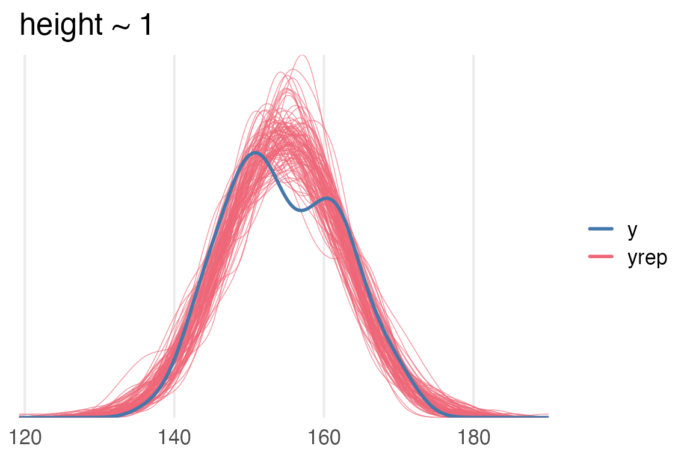

Statistical Rethinking Workthrough Blog
About
blog
Statistical Rethinking Workthrough Blog
Statistical Rethinking Workthrough Blog
Author
Josef Fruehwald
Posts
Setup
01 Golem of Prague Chapter
02 Small Worlds and Large Worlds
Garden of Forking paths part 2
Starting Sampling
Sampling Summaries
Predictive Distributions
Linear Models: Part 1
Linear models, part 2
Reporting a linear model
Reporting linear model parameters
DAGs part 1
DAGs part 2
DAGS part 3
Haunted DAGSs
Multicollinearity & Post-treatment bias
Colliders
Where I do a lot of work and don’t understand colliders any better.
Causal DAG typology
Categories
All
(19)
Causal DAG typology
I get confused thinking about the causality DAGs in terms of
models
. The arrows and paths in the DAGs don’t directly translate to terms. in the…
Sep 25, 2023
Josef Fruehwald
Where I do a lot of work and don’t understand colliders any better.
For me to really get a sense of how coliders work, I’m going to have to simulate a few different datasets, messing around with the…
Sep 6, 2023
Josef Fruehwald
Colliders
When A has an effect on Z, and B has an effect on Z, then Z is a “collider” variable between A and B.
Sep 6, 2023
Josef Fruehwald
Multicollinearity & Post-treatment bias
Here’s what McElreath says about multicollinearity
Sep 5, 2023
Josef Fruehwald
Haunted DAGSs
The first example in the book is about Berkson’s Paradox, which I believe is a kind of selection bias. The question is “Why do so many research results that are newsworthy seem unreliable?” The idea being that funding (or…
Sep 1, 2023
Josef Fruehwald
DAGS part 3
Ok, for the milk data, where the neocortex percentage is correlated with bodymass, how would we get the expected effect of increasing body mass?
Jul 13, 2023
Josef Fruehwald
DAGs part 2
For part 2, I’m going to try working through this step by step like he does in the book.
Jul 7, 2023
Josef Fruehwald
DAGs part 1
So, as a linguist, the only Directed…
Jul 5, 2023
Josef Fruehwald
Reporting linear model parameters
Table libraries
Jun 15, 2023
Josef Fruehwald

Reporting a linear model
Part of why I’m working through
Statistical Rethinking
as a blog is so that I can take some time and mess around…
Jun 14, 2023
Josef Fruehwald
Linear models, part 2
I think I’ve improved on the model diagram from the last post. Some things I’m still struggling with:
Jun 8, 2023
Josef Fruehwald
Predictive Distributions
One last post to work through different predictive distributions given 6W and 3W.
Jun 5, 2023
Josef Fruehwald
Linear Models: Part 1
“Suppose you and a thousand of your closest friends line up in the halfway line of a soccer field.”
Jun 5, 2023
Josef Fruehwald
Sampling Summaries
This isn’t MCMC sampling, but I’ll plot it as a line just for consistency for how MCMC chains look.
Jun 2, 2023
Josef Fruehwald
Starting Sampling
Plot of the base rate vs P(vampire | positive test)
May 15, 2023
Josef Fruehwald
Garden of Forking paths part 2
I’d like to re-represent the Bayesian Update in a nicer GT table. Some options are
May 10, 2023
Josef Fruehwald
01 Golem of Prague Chapter
Rejecting Model 1 does not result in a unique identification of a process, or even a hypothesis.
May 9, 2023
Josef Fruehwald
Setup
I’ve set up the blog using the default quarto blog template in RStudio, also initializing a git repo and renv.
May 9, 2023
Josef Fruehwald
02 Small Worlds and Large Worlds
In the analogy, models are “Small”, self-contained worlds.
May 9, 2023
Josef Fruehwald
No matching items